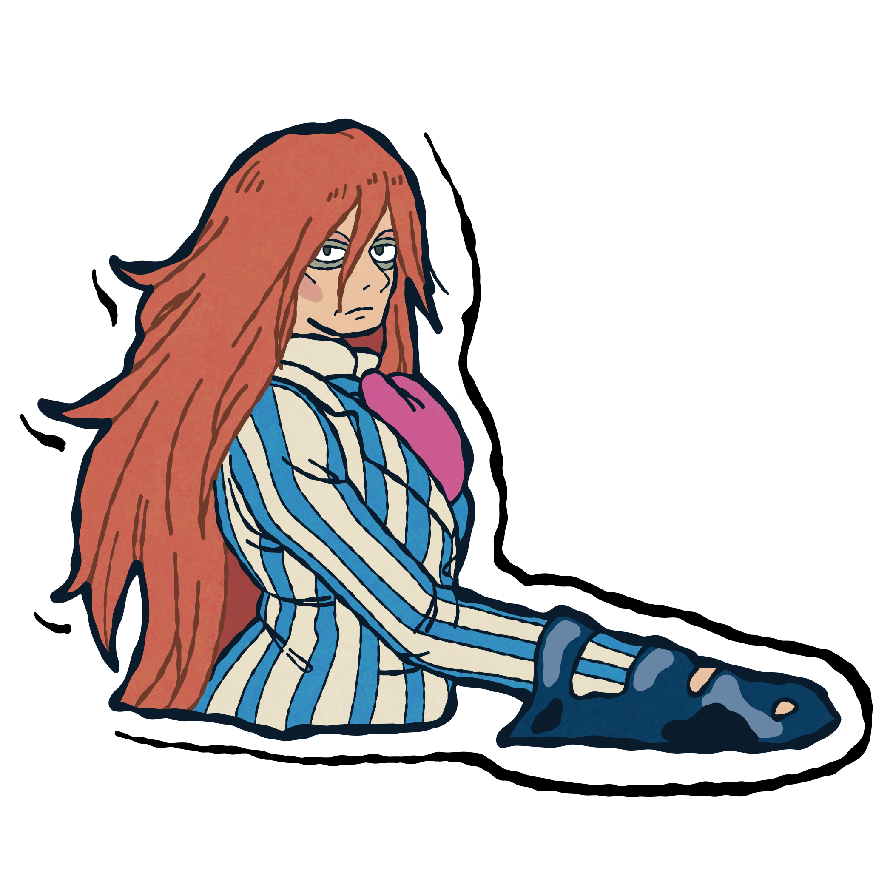
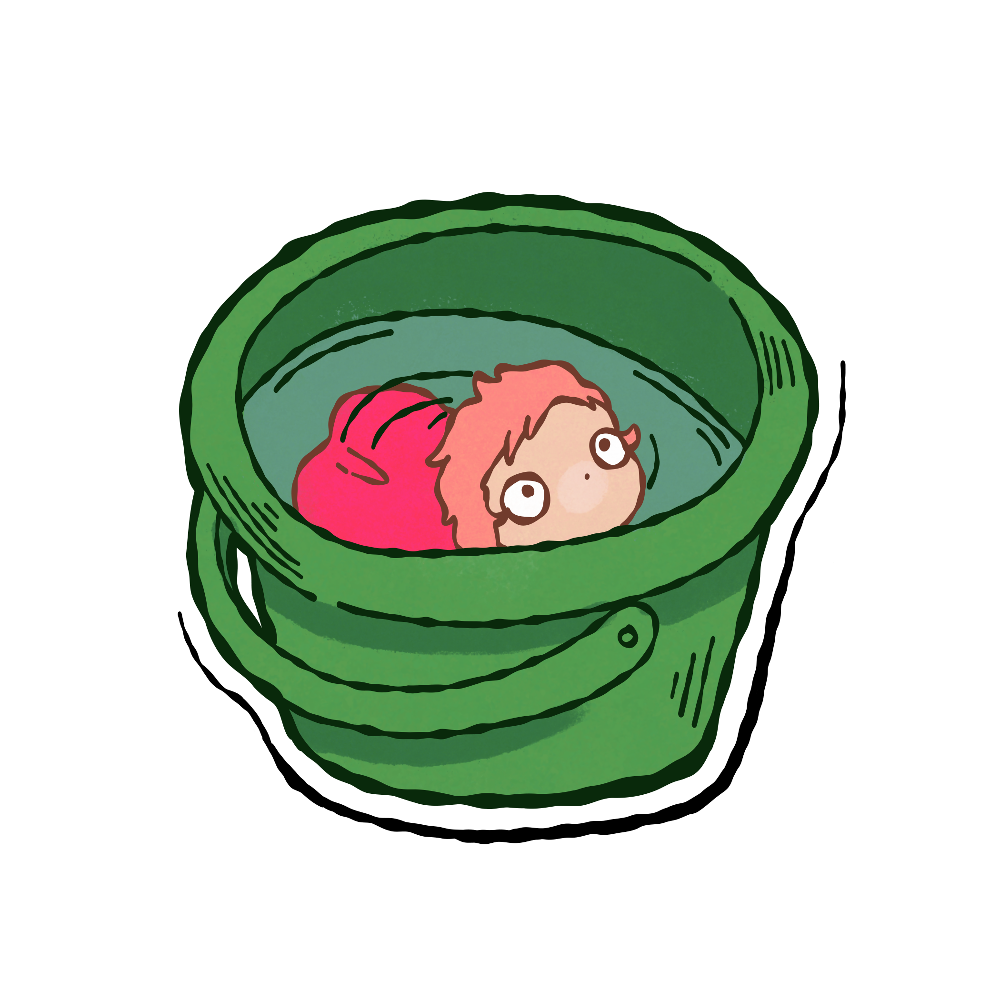

Once upon a time, there was a fish, born from a sea goddess and human sorcerer, and had many sisters. One day she escaped from home to explore the world, and got stuck in a jar. Luckily she was saved by a human boy named Sosuke. He named her Ponyo.
Sosuke took in ponyo as his pet, not knowing her origins, and put her in a green bucket. Taking her to his school and mom’s work which is a nursing home. Suddently, Ponyo’s father, Fujimoto, brought in a big wave and took her from Sosuke.

